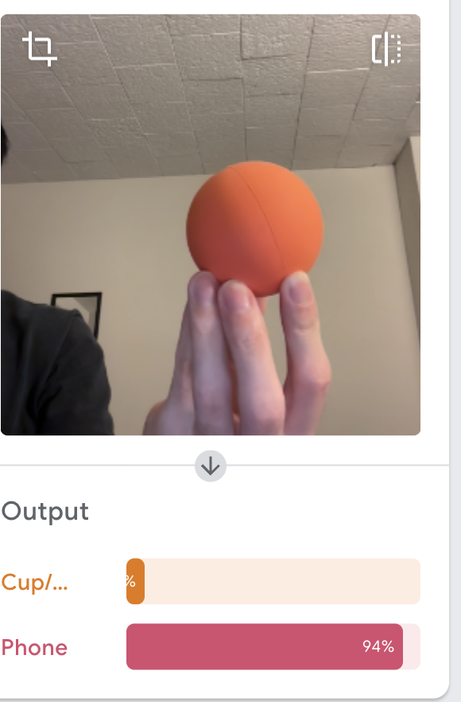

Can AI Recognize Everything?
We trained an AI model to recognize cups, glasses, and phones. Now we want to see how well it works with objects it has never seen before.
Try our AI model and see if you can fool it!
1. Test Our AI
Click Start Camera and show a cup, glass, or phone. See if the AI can recognize it correctly.
Camera is off.
What Does the AI Think?
Start the camera to see the results.
Cup / Glass: 0%
Phone: 0%
Keep in mind: Even if the AI shows 99% confidence, that doesn't mean its answer is correct.
2. Can You Fool the AI?
Try these challenges and see when the AI makes mistakes.
Challenge 1: Different Lighting
Show a cup in a bright room, then try it in a darker room. Does the AI still recognize it?
Challenge 2: Different Backgrounds
Put the same object in front of a different background. Does the prediction change?
Challenge 3: Something New
Show the AI something that isn't a cup or phone, like a notebook or keyboard. What does it predict?
3. Our Test Results
We tested three objects that were not part of our training categories. Here is what happened.
Test 1: Orange Ball

The AI predicted Phone with 94% confidence. Even though it was a ball, the AI still classified it as a phone.
Test 2: Water Bottle

The AI predicted Cup/Glass with 100% confidence. The bottle was not one of our training categories, but the AI still gave a confident answer.
Test 3: Ceramic Bowl

The AI predicted Phone with 79% confidence. We found this surprising because the bowl looks more like a cup than a phone.
What We Learned
Our AI always tries to choose between Cup/Glass and Phone, even when the object is neither. This shows that a high confidence score does not always mean the AI is correct.
4. AI Demonstration Video
Watch our demonstration of the AI model as we test different objects and see how it classifies them.
In our demonstration video, we tested four different objects to see how our AI model would classify them. First, we tested a phone, and the model was split between Cup/Glass and Phone, giving each category about 50% confidence. Next, we tested a remote, which the AI classified as a phone. The tennis ball was incorrectly classified as a cup, while the water bottle was also classified as a cup. These results showed us that our model can struggle with objects outside its training categories. Even when the AI makes a prediction, it does not always mean that the prediction is correct.
5. About Our Project
Our AI Model
View our Teachable Machine model
Project Statement: Can AI Recognize Objects with Perfect Accuracy?
Introduction
For our third project, we constructed a machine learning model that recognizes common objects through the use of Google Teachable Machine. In this project, the primary goal was to understand how machine learning operates and how training data impacts the predictions of the AI model. Specifically, we focused on two categories of objects: cups/glasses and phones. The reason for choosing such categories is that both are common objects that are easily accessible and available for photos.
The core research question for our project was the following: is AI able to recognize an object it hasn't been trained to identify? In other words, does the model realize that the object is unknown or will it assign it to one of the categories we have created? This topic is relevant to Joy Buolamwini's Unmasking AI, where she discusses possible errors made by artificial intelligence because of its data and design process.
Building and Training Our Model
At first, we used Teachable Machine, a website developed by Google that enables people to create machine learning algorithms without having extensive coding skills. We chose image classification, since we needed to use a webcam to capture the objects recognized by the machine. Every group member provided his own images to the database.
Once we gathered all the images, we trained our model using Teachable Machine. After completing the process, we evaluated our model using the webcam preview option. The predictions of the model were displayed in two categories together with the confidence percentages. Lighting, angles and backgrounds might have influenced predictions of our model, since it had been trained on examples provided by us and not on how humans would understand the objects.
Additionally, we created BLINDSPOT, which allows visitors to run our model through their webcam. There are several challenges on the website that invite people to try out various lighting, background and even unfamiliar objects.
Testing Our Model
Since we trained the model, we were interested in its reaction to objects that did not belong to our two categories. Thus, we conducted three experiments using three unfamiliar objects, such as an orange ball, a water bottle, and a ceramic bowl.
Firstly, we used an orange ball as an object. The model classified it as a phone with 94% probability despite the fact that it does not have any features of a phone. Secondly, we used a plastic water bottle as an object, and the model classified it as a cup/glass with 100% probability. This result was reasonable since both a water bottle and a cup/glass are used for drinking but we did not include a water bottle in our categories. Finally, we used a ceramic bowl as an object, and the model classified it as a phone with 79% probability and as a cup/glass with 21%.
These results showed us that our model does not recognize objects the same way people do. Instead, it compares what it sees with the examples from its training data. Since we only created two categories, the model had no option to identify something as unknown. One of our biggest discoveries was that a high confidence percentage does not necessarily mean a prediction is correct.
Connection to Unmasking AI
Another major connection between our project and Unmasking AI by Joy Buolamwini is the influence of human beings on the functioning of artificial intelligence. According to Buolamwini, there are instances when artificial intelligence does not operate correctly because of biased human decisions. The author illustrates how her face detection algorithm failed to detect her face and how it detected lighter skins better than darker. Such instances prove how poor representation of training data leads to inaccuracies in artificial intelligence algorithms.
While our project did not include facial detection and checking for racial and gender bias, we observed the same connection between training data and prediction. As our team decided which objects would be classified by the algorithm and how they would look like, we limited our model to detecting only cups/glasses and phones as two objects.
Another significant insight gained from Unmasking AI is the notion of "coded gaze," whereby the bias of technology developers gets encoded into the system developed. The notion was essential in realizing the role played by our human decisions in relation to the use of AI. Classification of an orange ball as a phone by our model is one way in which our selection of category and example played a part in our classification.
It is clear that misclassifying a ball cannot compare to misidentification of people by facial recognition technology. Nevertheless, the limitations posed by our experiment became apparent once we realized why the limitations are critical when AI is being used in areas like employment and security. The work done by Buolamwini made us realize that developers had to think of the implications of their technology and test the systems outside their intended usage.
What We Learned
One of the lessons we learned is that machine learning relies greatly on training data. Previously, it was natural to think that AI can identify objects and answer correctly. However, after we built our model, it became evident that its capabilities depend on the amount of knowledge we provide. Although people can easily understand that a ball is neither a cup nor a phone, the model cannot distinguish between these objects because there is no unknown object category.
Another lesson we learned is that AI has to be tested in various conditions. Had we used only cups and phones for testing, we could be sure about how well our model works. It turned out that it is important to test unfamiliar objects to discover some errors we did not notice before. The percentages of confidence can be deceiving as well. For example, although the prediction looks very convincing and has 100% confidence, it does not mean that it is right; maybe, the model just picks the nearest category.
Conclusion
In general, the whole project was helpful in terms of increasing our awareness of the process of machine learning and the impact of humans on the predictions of AI algorithms. Through creating an algorithm to recognize cups, glasses, and phones, we have learned how computers work with different samples and examples to produce predictions and what mistakes could arise from that.
Considering the connection of our project to Unmasking AI project, we have gained an understanding of why it is important to know about the mentioned limitations outside the classroom experiment. Buolamwini shows that issues that may appear in the work of AI algorithms can lead to much bigger problems as far as they may influence people. The main conclusion we were able to draw from this experience is that we should not blindly rely on the predictions produced by AI because of their confidence. We have to know how such algorithms work and what problems may arise in their work.